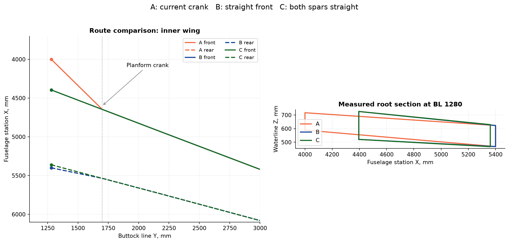
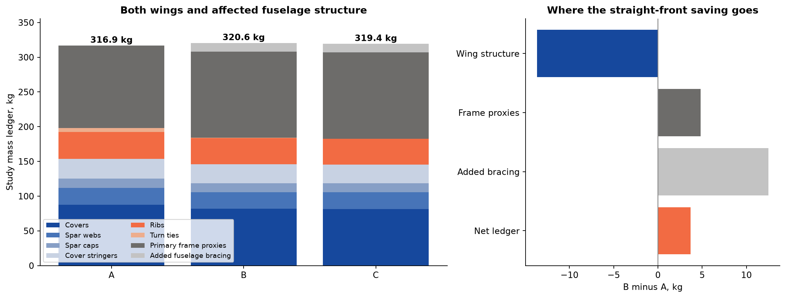
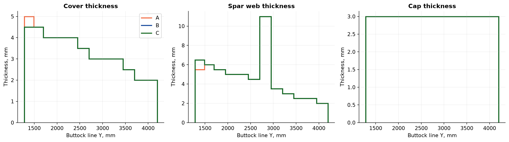
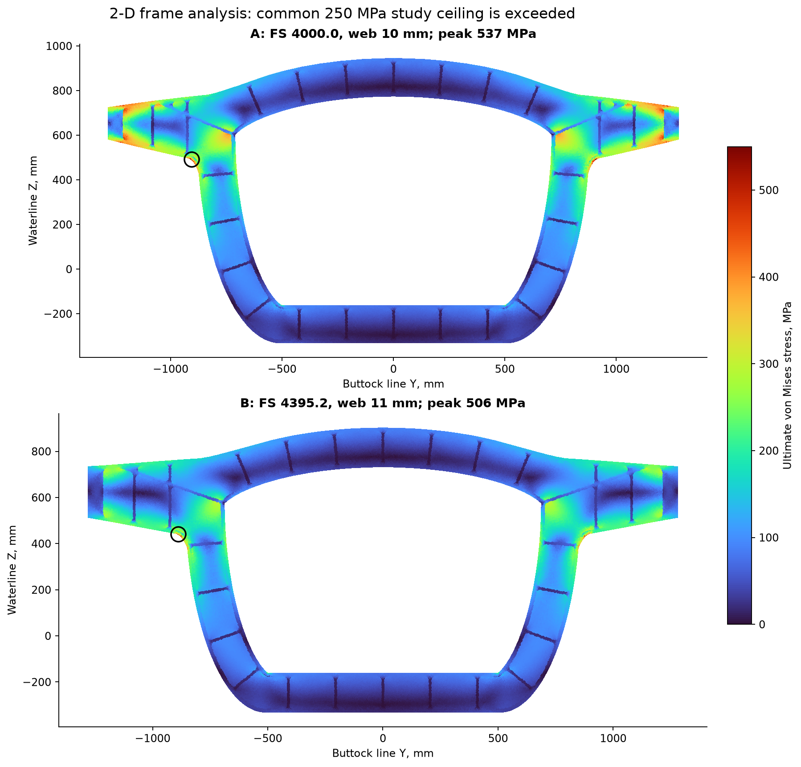
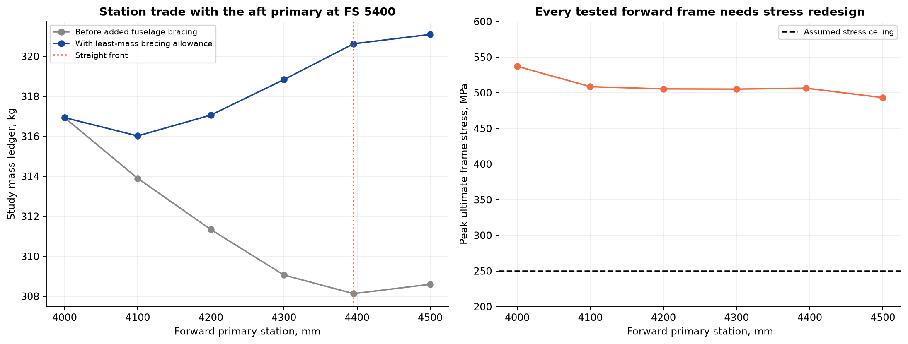
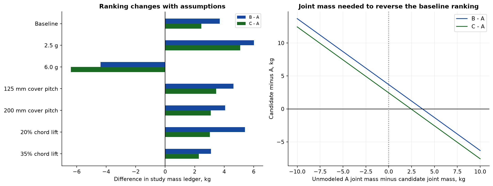
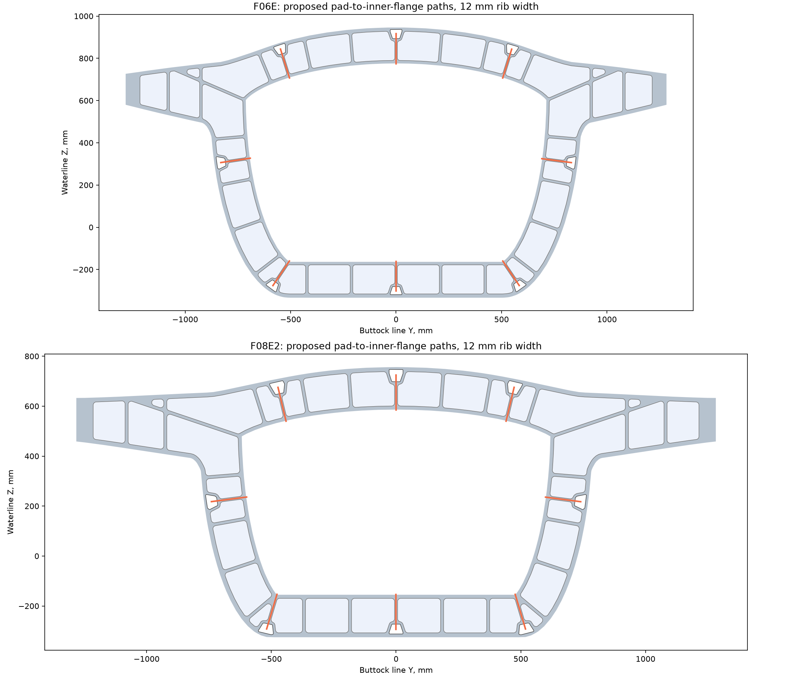
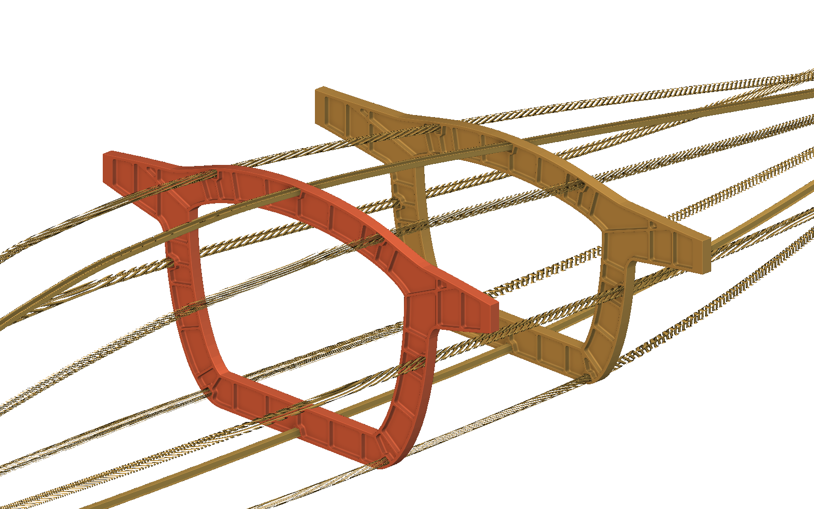

Continuous spars.
Compare the complete load path.
Straight and cranked wing roots, relocated primary frames, buckling screens, and a traceable weight ledger.
The question is whether a straight spar remains lighter after the fuselage structure moves with it. George Irving's sketch defines the preferred layout direction.
Decision from this trade
Develop the two-spar layout in George's sketch. It has the most efficient modeled wing, but a lower complete structural weight is not yet established.
Candidate C reduces the modeled wing mass by 15.4 kg (7.8%). Its fixed-root deflection is 15.6% lower.
Including primary-frame proxies and replacement bracing gives C 319.4 kg versus A 316.9 kg. The 2.4 kg difference is smaller than the unresolved joint and frame-design uncertainty.
01George's sketch and the measured candidates
The source reference image is omitted from this public edition. The recorded design discussion is retained.
The model names F06 as the forward primary and F08 as the aft primary. The requested forward-frame move applies to F06.
| Candidate | Forward primary FS, mm | Aft primary FS, mm | Layout |
|---|---|---|---|
| A | 4000.0 | 5400.0 | Cranked front / current primaries |
| B | 4395.2 | 5400.0 | Straight front / forward primary aft |
| C | 4395.2 | 5361.3 | Both spars straight inboard |

The front root depth increases from 127.7 to 205.6 mm when F06 moves from FS 4000 to FS 4395.2. The front-to-rear root spacing decreases from 1400.0 to 966.1 mm in C. These are measured geometric changes.
The source reference image is omitted from this public edition. The recorded design discussion is retained.
02Common loads, material assumptions, and support
The same assumptions apply to each candidate. The wing model includes both closed outer boxes, covers, spars, stringers, full-depth ribs, and a strength-only allowance for axial-force turning. Stringers span complete rib bays and stop only at ribs.
| Input | Value | Status |
|---|---|---|
| Aircraft weight | 7,500 lbf / 3,402 kg | User estimate; complete aircraft |
| Load envelope | 3.8 g limit; 1.5 ultimate multiplier | Assumed; 2.5 g and 6.0 g sensitivity |
| One-wing root shear / moment | 63.39 kN / 86.74 kN m at limit | Derived from normalized elliptical lift |
| Lift and structure spans | Lift: BL 1280-4572; structural box: BL 1280-4200 | Geometry-based extents; tip load beyond BL 4200 is retained |
| Aerodynamic load line | 25% of source-section chord | Assumed; 20% and 35% sensitivity |
| Aluminum elastic model | E = 71 GPa; Poisson ratio = 0.33; density = 2,830 kg/m³ | Assumed common material; not certified forging allowables |
| Stress ceiling | 250 MPa at ultimate load | Assumed elastic comparison gate |
| Local buckling | 0.65 capacity knockdown; required load factor 1.15 at ultimate | Assumed, with no postbuckling credit |
| Cover / rib pitch | Cover stiffeners ≤150 mm; ribs ≤250 mm projected span | Study structure; both included in mass |
| Cover stringers | T section: 40 mm flange, 2.5 mm wall; depth ≤40 mm and ≤30% of local box depth | Proposed comparison geometry |
| Wing stiffness gates | ≤100 mm deflection; ≤2° twist at BL 4200, limit load | Assumed fixed-root comparison gates |
| Primary-frame reactions | 55% forward / 45% aft of wing shear and bending moment | Assumed split; frame forces balance a lower-rim inertial load |
The totals cover the affected primary structure. They are not an aircraft empty weight. Common outer tips, tail, most fuselage structure, systems, and manufacturing stock are excluded.
Root fittings, bolts, clips, blend volumes, and joint compliance remain incomplete. Their differences enter the break-even comparison in Section 7.
03Weight comparison: what is actually counted
| Component, kg unless marked | A | B | C |
|---|---|---|---|
| Wing covers | 87.65 | 81.89 | 81.47 |
| Spar webs | 24.06 | 23.97 | 24.13 |
| Spar caps | 13.42 | 12.98 | 13.01 |
| Cover stringers | 28.49 | 27.11 | 26.69 |
| Full-depth ribs | 38.58 | 37.47 | 37.21 |
| Axial-force-turn tie allowance | 5.82 | 0.94 | 0.10 |
| Wing subtotal | 198.01 | 184.37 | 182.62 |
| Two primary-frame membrane proxies | 118.92 | 123.76 | 124.26 |
| Additional fuselage bracing | 0.00 | 12.50 | 12.50 |
| Study ledger total | 316.93 | 320.63 | 319.37 |
| Study ledger total, lb | 698.72 | 706.86 | 704.10 |

The wing gauges use a discrete search at 0.5 mm increments. Six coordinate-search orders reduce dependence on the order of sizing. This is a local gauge search, not a proven global minimum.
The frame mass integrates the measured plan area with 60 mm lands and locally sized pocket floors. All candidates omit longeron holes and three-dimensional blend volume in this common proxy. These values are not STEP mass properties.
The turn allowance includes axial force in covers, caps, webs, and stringers. Each chord half follows the adjacent spar direction. The required tie area equals the resulting ultimate force divided by 250 MPa. Full joint sizing remains open.
04Wing response and the selected gauges
| Calculated quantity | A | B | C | Common gate |
|---|---|---|---|---|
| Maximum ultimate section stress, MPa | 212.8 | 160.6 | 163.0 | ≤250 |
| Minimum local buckling load factor | 1.151 | 1.151 | 1.151 | ≥1.15 |
| Deflection at BL 4200, mm | 72.16 | 60.05 | 60.87 | ≤100 |
| Twist at BL 4200, degrees | 0.831 | 0.808 | 0.811 | ≤2.0 |
| Screened wing sections | 252 | 252 | 252 | All pass selected gates |

The straight options use the deeper front root to improve bending efficiency. Their narrower box also changes torsional stiffness and shear demand. The calculation includes both effects.
The wing root is fixed in this compliance calculation. Bulkhead flexibility is evaluated separately and is not coupled into these deflections. Aeroelastic stability and whole-airframe buckling are outside this model.
05The primary-frame stress problem remains
A two-dimensional plane-stress finite-element model uses each source-derived frame outline and pocket boundary. Lands retain the 60 mm axial depth. Pocket-floor thickness increases until the selected local buckling screen passes.
| Frame | FS, mm | Floor, mm | Mass proxy, kg | Pocket buckling factor | Peak ultimate stress, MPa | Result |
|---|---|---|---|---|---|---|
| A forward | 4000.0 | 10 | 61.83 | 1.34 | 537 | Stress fails |
| A aft | 5400.0 | 9 | 57.09 | 1.26 | 549 | Stress fails |
| B forward | 4395.2 | 11 | 66.67 | 1.43 | 506 | Stress fails |
| B aft | 5400.0 | 9 | 57.09 | 1.26 | 549 | Stress fails |
| C forward | 4395.2 | 11 | 66.67 | 1.43 | 506 | Stress fails |
| C aft | 5361.3 | 9 | 57.58 | 1.28 | 529 | Stress fails |

Neither architecture is substantiated by this analysis. The shoulder near the wing arm needs a wider or deeper load path, a revised opening, or a different attachment arrangement.
Thickening only the pocket floor does not remove the concentrated shoulder load. The unchanged aft primary also fails, so moving the forward primary alone cannot close the structural design.
Frame peak stresses change with mesh refinement. Strain energy converges more closely. The model omits rolling-ball stiffness, fastener bearing, local contact, and out-of-plane instability. Treat the plotted peaks as a redesign signal, not a certified notch stress.
The calculation also records a uniform-thickness strength index in the data files. It scales the membrane mass by the stress ratio. It does not represent a fitted or buckling-verified part and is excluded from the weight ledger.
06A relocated frame also changes the longeron bays
Moving F06 aft creates a 995.2 mm projected bay after F05. The original bay is 600 mm. Without replacement support, the weakest calculated Euler-capacity ratio is 0.362 of its former value.
| Bracing option for C | Calculated added mass | Consequence |
|---|---|---|
| Keep a plain frame at FS 4000 | 12.50 kg | Retains the existing long-bay support. Uses a measured 55 mm hoop with 16 mm axial thickness. |
| Thicken all eight existing hats locally | 17.45 kg | 9 mm nominal walls are required by this relative Euler check. This exceeds the installed 1.5-3 mm control range. |
| Credit continuous skin restraint | Not counted | Requires designed skin/hat/frame attachments and a demonstrated panel stability model. |
The ledger chooses the lighter of the added-frame and local-hat options. The Euler calculation preserves the original bay capacity; it does not prove that the original longerons meet their aircraft loads.
A light formed frame may weigh less than the retained solid-hoop convention. That is a useful next trade. Reducing its mass by a few kilograms can change the ranking.
07Station, load, and joint-mass sensitivity

The lowest sampled ledger occurs at FS 4100: 316.0 kg. It saves only 0.9 kg against A. This small difference does not establish an optimum station.
| Forward FS, mm | Wing, kg | Primary proxies, kg | Added bracing, kg | Ledger, kg |
|---|---|---|---|---|
| 4000.0 | 198.01 | 118.92 | 0.00 | 316.93 |
| 4100.0 | 193.97 | 119.92 | 2.12 | 316.02 |
| 4200.0 | 190.66 | 120.68 | 5.72 | 317.06 |
| 4300.0 | 187.83 | 121.23 | 9.78 | 318.83 |
| 4395.2 | 184.37 | 123.76 | 12.50 | 320.63 |
| 4500.0 | 184.46 | 124.14 | 12.50 | 321.09 |

At the baseline, C becomes lighter than A if A needs more than 2.44 kg of additional joint mass relative to C. The existing turn-tie allowances are already counted. This threshold concerns the remaining fittings and details.
The ranking reverses in some sensitivity cases. The current evidence supports a more efficient straight wing, but does not establish the lightest finished aircraft structure.
08Methods, numerical checks, and limits
The wing uses a spatial thin-wall beam along the measured box centerline. Each quadrilateral section is projected normal to that line. Section integration retains unsymmetric bending, axial load, closed-cell torsion, and approximate web-shear compliance.
Thin-wall torsion: J = 4 Am² / sum(length / thickness) Torsional shear flow: q = T / (2 Am) Plate rigidity: D = E t³ / [12 (1 - nu²)] Local interaction: Rcompression + Rshear² = 1 Force-turn magnitude: R = 2 |N| sin(change in direction / 2) Mass: density × integrated material volume
The local plate calculation uses simply supported coefficients and the stated knockdown. The shear model adds the magnitudes of torsional and vertical-web shear. It does not resolve full shear-flow redistribution or shear lag.
| Verification | Result | Practical limit |
|---|---|---|
| Analytic cantilever deflection / closed-cell twist | Deflection error 0.0036%; torsion error below 1e-10 | Checks implementation on a uniform straight beam |
| Independent Ritz plate / Euler column benchmarks | Passed analytic comparison and refinement checks | Checks the local solver; does not validate aircraft restraints |
| Wing integration refinement, 50 / 25 / 12.5 mm | Largest final deflection change 0.0027% | Same final gauges; no re-sizing during this check |
| Dense wing section check | 252 sections per candidate pass selected gates | Local screens only; excludes complete joints and global instability |
| Frame equilibrium and work balance | All final solves meet recorded residual, force, moment, and energy checks | Linear, self-equilibrated plane-stress load case |
| Frame mesh refinement | 20 / 12 / 8 mm target sizes at final floor thickness | Peak stress remains mesh-sensitive |
| Frame FS, mm | Nodes at 8 mm | Final energy change | Final peak-stress change | Free-DOF residual |
|---|---|---|---|---|
| 4000.0 | 26,176 | 0.37% | 7.00% | 2.24e-12 |
| 5400.0 | 24,701 | 0.44% | 7.25% | 3.29e-12 |
| 4395.2 | 27,221 | 0.37% | 9.00% | 4.51e-12 |
| 5361.3 | 24,934 | 0.43% | 8.61% | 3.43e-12 |
An initial dense check exposed a stringer-count transition missed by coarse station checks. The final model holds stringer count constant within each rib bay. The failed check remains in the evidence folder.
The model excludes shell distortion at the crank, warping restraint, wing-root joint flexibility, fatigue, damage tolerance, fastener bearing, material plasticity, and global frame buckling. Loads and restraints need replacement when the aircraft definition becomes available.
09Decision conditions, sources, and reproducible files
| Condition | Action |
|---|---|
| George's continuous-spar arrangement is the chosen layout direction | Develop C, including the light FS 4000 support frame and coordinated root fittings. |
| A lower complete weight must be demonstrated | Resolve primary-frame shoulder stresses and compare finished joint masses before claiming a winner. |
| C saves more than 2.44 kg in bracing or remaining joints | C also becomes lighter in the baseline ledger. |
| The primary locations must stay at FS 4000 and 5400 | Develop A with a full crank transfer rib and verified cover/cap/web joints. |
| Aerodynamic and equipment loads become available | Re-run the editable load cases, including gusts, inertia relief, torsion, and actual primary load split. |
NASA's tested kinked-wing structure uses special ribs, local fittings, and separate cap/web splice paths. This supports the load-path checks in the trade. See NASA CR-2020-220425, printed pages 56-59 and 67.
The Boeing center-section study connects outer wings, the center section, and fuselage bulkheads through an integrated structure. It supports including fuselage consequences in the comparison. See NASA CR-159249, printed pages 68-70.
Plate stability methods follow NACA TN 3781. The combined-load screen follows the plate interaction described in NACA TN 1750. The application here remains a reduced-order engineering interpretation.
All plotted numerical results are calculated study values. Geometry is derived from the saved source meshes. Assumptions are labeled in Section 2. The sketch and native screenshot are reference evidence. This report does not release an aircraft part for manufacture or flight.
10Follow-up: the marked bulkhead load paths
The source reference image is omitted from this public edition. The recorded design discussion is retained.

| Primary | Case | Mass proxy, kg | Ultimate peak, MPa | Pocket buckling factor |
|---|---|---|---|---|
| F06E | original | 54.09 | 644 | 0.383 |
| F06E | ties | 55.23 | 643 | 0.361 |
| F08E2 | original | 51.89 | 580 | 0.474 |
| F08E2 | ties | 53.13 | 568 | 0.465 |
This check uses the actual Revision E passage geometry, a 6 mm pocket floor, and a 12 mm target mesh. It differs from the gross, locally thickened frame proxies in the main trade.
The added ties give each passage pad a direct rib into the inner flange. They do not solve the wing-arm shoulder problem. Both the stress and local pocket-buckling gates still fail at the original 6 mm floor.
The long spar mark has two possible interpretations: a crossmember through the main opening, or a stronger path into its perimeter flange. That choice remains pending. The crossmember also consumes equipment space.

The pad ties are installed in the main native assembly and both separate primary notebooks. All 4,388 geometry probes pass at nominal and changed inputs. The matching STEP solids weigh 56.080 kg forward and 53.937 kg aft.
Revision F report and native images · Updated main model · Revision F verification
Before/after tie results · Separate, unselected crossmember study